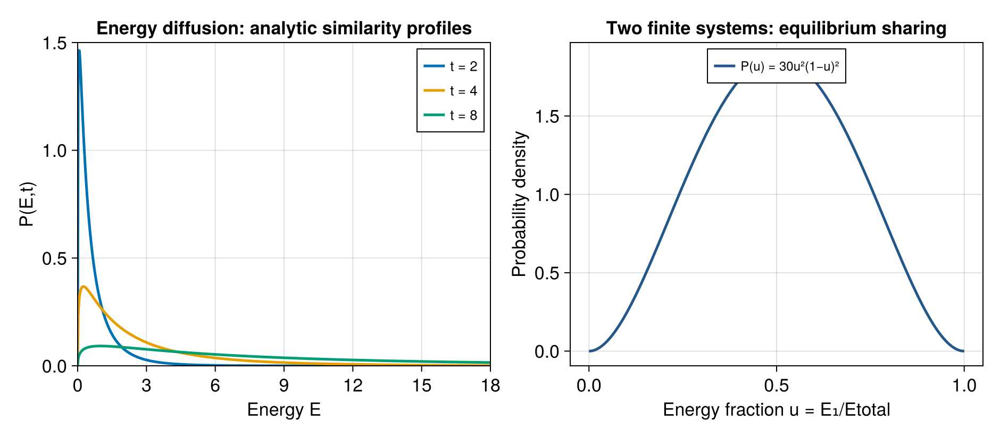

10 Driven systems and finite reservoirs
The energy-space Einstein relation becomes useful when microscopic driving is complicated but its scaling with energy is simple. It determines the noise from a measured heating rate and a density of states, or conversely predicts heating from fluctuations. We now work through three applications: a particle accelerated by a moving chaotic boundary, a harmonic probe kicked while attached to a finite equilibrating system, and two finite bodies exchanging energy. The distributions below are consequences of stated continuum models; they are not numerical evidence that every microscopic drive realizes those models.
10.1 A particle in a moving chaotic cavity
A particle of mass \(m\) has kinetic energy \(E=mv^2/2\) in a \(d\)-dimensional cavity. Assume that the fixed-wall billiard mixes its collision angles sufficiently quickly. The wall moves slowly, with normal velocity \(u\) much smaller than a typical particle speed. Locally specular reflection in the wall frame gives
\[ v_n'=2u-v_n,\qquad \Delta E=2mu^2-2muv_n. \]
The fluctuating term is first order in \(u\), while its mean vanishes for an unbiased wall velocity before accounting for collision sampling. The positive quadratic term and the bias of collision sampling both contribute to the mean. Their precise coefficient depends on geometry and wall statistics. Their energy scaling follows without solving trajectories: collision rate is proportional to \(v/L\), so
\[ A(E)\propto\frac{mu^2v}{L}\propto E^{1/2}, \qquad B(E)\propto\frac{m^2u^2v^3}{L}\propto E^{3/2}. \]
The required assumptions are weak energy change per collision, short correlations on the heating time, and no slowly trapped family of trajectories dominating the statistics. A classically chaotic shape alone does not guarantee every one of these assumptions for every boundary motion. Coherent quantum interference can also invalidate a classical diffusion picture over sufficiently long times.
Weyl counting gives \(\Omega(E)\propto E^{d/2-1}\) in the semiclassical regime, so \(\beta=(d/2-1)/E\). Parameterize the diffusion strength by \(b>0\):
\[ B(E)=bE^{3/2}. \]
Retaining the finite-system derivative in the Einstein relation gives
\[ A(E)=\frac12\left[B\beta+B'\right] =\frac{b(d+1)}4\sqrt E. \tag{10.1}\]
The derivative is essential for a single particle. In \(d=2\), the density of states is constant and \(\beta=0\), yet heating remains positive. A naive equation \(2A=B\beta\) would miss it completely.
10.2 Solving the cavity diffusion model
Use the Itô stochastic equation equivalent to the Fokker–Planck description:
\[ \dd E=\frac{b(d+1)}4\sqrt E\,\dd t +\sqrt b\,E^{3/4}\dd W_t, \qquad \ev{(\dd W_t)^2}=\dd t. \]
The variable \(x=\sqrt E\) simplifies both coefficients. Itô’s rule includes the second derivative term:
\[ \begin{aligned} \dd x &=\frac1{2\sqrt E}\dd E -\frac1{8E^{3/2}}(\dd E)^2\\ &=\frac{bd}{8}\dd t+\frac{\sqrt b}{2}\sqrt x\,\dd W_t. \end{aligned} \tag{10.2}\]
This square-root diffusion has a simple similarity solution. Let \(p_x(x,t)\) be its density with respect to \(\dd x\). For the idealized entrance law starting at \(x=0\), substitution in its Fokker–Planck equation verifies
\[ p_x(x,t)=\frac{x^{d-1}e^{-x/\vartheta}}{\Gamma(d)\vartheta^d}, \qquad \vartheta=\frac{bt}{8},\quad x\ge0. \]
The gamma-function identity \(\int_0^\infty x^{d-1}e^{-x/\vartheta}\dd x=\Gamma(d)\vartheta^d\) normalizes it. In an actual cavity the diffusion approximation fails sufficiently near the lowest quantum levels and at speeds comparable to \(u\). A finite initial distribution instead approaches the displayed similarity shape once its initial energy scale becomes negligible, provided the continuum assumptions remain valid.
Changing variables back requires the Jacobian \(\dd x/\dd E=1/(2\sqrt E)\):
\[ P(E,t)=\frac{E^{(d-2)/2}}{2\Gamma(d)\vartheta^d} \exp\left(-\frac{\sqrt E}{\vartheta}\right). \tag{10.3}\]
The tail is exponential in speed, rather than in energy. This is a nonequilibrium similarity distribution; its continuing motion to higher energy rules out a stationary Gibbs interpretation. Gamma moments give
\[ \ev E=d(d+1)\vartheta^2, \qquad \frac{\operatorname{Var}E}{\ev{E}^2} =\frac{4d+6}{d(d+1)}. \tag{10.4}\]
At the same mean energy, a canonical free particle has relative variance \(2/d\). The driven distribution is therefore broader. For a rapidly internally equilibrating gas, an analogous total-energy description replaces the number of quadratic momentum coordinates by their total count. Independent particles that fail to equilibrate do not justify that replacement for the full many-particle state, even if their total energy happens to look Gaussian.

A broader driven distribution can nevertheless have the same thermodynamic entropy density as a canonical distribution. For a distribution over states represented by \(P(E)\), its coarse entropy uses the measure \(P(E)/\Omega(E)\):
\[ S[P]=-\int\dd E\,P(E)\ln\frac{P(E)}{\Omega(E)}. \]
At fixed normalization and mean energy, maximizing this functional by Lagrange multipliers gives \(P_{\mathrm{G}}(E)\propto\Omega(E)e^{-\beta E}\). Direct substitution then gives the exact comparison
\[ S[P_{\mathrm{G}}]-S[P]=\int\dd E\,P(E)\ln\frac{P(E)}{P_{\mathrm{G}}(E)}\ge0. \]
The inequality is relative entropy positivity. It does not determine whether the difference is extensive; that depends on whether only a collective energy distribution differs or whether independent microscopic sectors each retain extra information.
10.3 A kicked harmonic probe inside a finite system
Consider a classical harmonic coordinate with
\[ \varepsilon(x,p)=\frac{p^2}{2m}+\frac{kx^2}{2}. \]
Couple it weakly to a much larger but finite chaotic system, and call the total energy \(E\). Wait between kicks long enough for the probe to equilibrate internally with that system, while the total energy changes little per cycle. Its pre-kick marginal is then approximately canonical at \(T(E)\). During a very short impulse the coupling and coordinate motion are negligible. An impulse \(I(x)\) changes \(p\to p+I(x)\), and hence
\[ \Delta E=\frac{pI(x)}m+\frac{I(x)^2}{2m}. \]
The equilibrium Gaussian momentum is independent of \(x\), has zero mean, and satisfies \(\ev{p^2}=mT\). For kicks separated by time \(\tau\), the leading drift and variance rate are consequently
\[ A(E)=\frac{\ev{I(x)^2}}{2m\tau}, \qquad B(E)=\frac{T(E)\ev{I(x)^2}}{m\tau}=2T(E)A(E). \tag{10.5}\]
In the variance, terms of order \(I^4\) have been dropped; the retained noise is the square of the term linear in impulse. These expressions use a canonical probe marginal and thus omit finite-reservoir corrections. The exact energy-space relation restores the \(B'\) correction, consistently of the same order as corrections to that marginal.
For example, choose \(I(x)=g\operatorname{sgn}(x)\abs x^r\) with \(r\ge0\). The position variance is \(T/k\), and a Gaussian integral gives
\[ \ev{I^2}=g^2\left(\frac{2T}{k}\right)^r \frac{\Gamma(r+1/2)}{\sqrt\pi}. \]
Thus different spatial profiles change how the heating rate grows with temperature. This is a useful concrete realization of the general energy-distribution framework of [1]; the following moment calculation is independent of the oscillator details.
10.4 A transition in fluctuation growth
Suppose over the energy range of interest
\[ \begin{gathered} \beta(E)=cE^{-\alpha},\qquad A(E)=aE^s,\\ a,c>0,\qquad\alpha>0. \end{gathered} \]
For the harmonic impulse above, \(s=\alpha r\). The mean energy \(\mu\) and variance \(v\) obey the exact diffusion moment identities, when boundary terms vanish,
\[ \dot\mu=\ev{A},\qquad \dot v=\ev B+2\operatorname{Cov}(E,A). \]
If the energy distribution remains narrow and higher cumulants are controlled, expand the smooth coefficients around \(\mu\). To leading order,
\[ \dot\mu=A(\mu),\qquad \dot v=B(\mu)+2A'(\mu)v. \]
Using the thermodynamic approximation \(B\simeq2A/\beta\) and eliminating time gives
\[ \frac{\dd v}{\dd\mu}-\frac{2s}{\mu}v =\frac2c\mu^\alpha. \]
The integrating factor is \(\mu^{-2s}\), so
\[ v(\mu)=\mu^{2s}\left[ \frac{v_0}{\mu_0^{2s}} +\frac2c\int_{\mu_0}^{\mu}z^{\alpha-2s}\dd z \right]. \tag{10.6}\]
The canonical variance at the same mean is
\[ v_{\mathrm{can}}=-\frac{\dd E}{\dd\beta} =\frac{\mu^{1+\alpha}}{c\alpha}. \]
Let \(\eta=2s-\alpha-1\). The elementary integral in Equation 10.6 has three qualitatively different limits:
| Condition | Asymptotic comparison, for negligible initial width |
|---|---|
| \(\eta<0\) | \(v/v_{\mathrm{can}}\to2\alpha/\abs\eta\) |
| \(\eta=0\) | \(v/v_{\mathrm{can}}\sim2\alpha\ln(\mu/\mu_0)\) |
| \(\eta>0\) | \(v/v_{\mathrm{can}}\) grows proportionally to \(\mu^\eta\) |
For \(\eta<0\), newly generated fluctuations dominate and the initial width becomes irrelevant. For \(\eta>0\), amplification of fluctuations generated early in the protocol dominates: the lower integration limit retains memory. At the boundary the integral is logarithmic. This is a transition in asymptotic fluctuation growth, rather than a claim of an equilibrium singularity in a partition function. Near \(\eta=0\), large \(\abs{\eta}\ln(\mu/\mu_0)\) is needed to distinguish a power from a logarithm, so long crossovers are expected.
The mean grows as
\[ \mu(t)=\left[\mu_0^{1-s}+(1-s)at\right]^{1/(1-s)} \]
for \(s\ne1\), and as \(\mu_0e^{at}\) for \(s=1\). For \(s>1\) this ideal power-law equation diverges at finite time; microscopic weak-drive assumptions generally fail before interpreting that divergence literally. For the runaway-width regime, one must also monitor \(v/\mu^2\): once it is no longer small, the narrow-distribution closure cannot establish the subsequent full distribution. For a fixed-duration weak kick to remain small relative to the energy at arbitrarily high energy, its mean relative change \(A(E)\tau/E\propto E^{s-1}\) must not grow; this favors \(s\le1\). Under that restriction, the growing-ratio regime \(\eta>0\) requires \(\alpha<1\). A large system does not by itself guarantee Gaussian statistics at arbitrarily long times.
Take \(\alpha=1/2\), for which \(T\propto\sqrt E\), and the harmonic probe impulse exponent \(r\). Then \(s=r/2\) and \(\eta=r-3/2\). A linear impulse (\(r=1\)) gives \(v/v_{\mathrm{can}}\to2\). At \(r=3/2\) the ratio grows logarithmically. At \(r=2\) it grows as \(\mu^{1/2}\) within the interval where the approximations remain controlled. A feedback or force profile changes noise amplification without changing the equilibrium density of states.
10.5 Two finite bodies exchanging energy
Now switch off the drive. Two internally equilibrating bodies have total energy \(E_{\mathrm{tot}}\), weak coupling, and subsystem energy \(E\) in body 1. The combined isolated system assigns equal probability to states at fixed total energy, so
\[ P_{\mathrm{eq}}(E)=\frac1{\mathcal Z} \Omega_1(E)\Omega_2(E_{\mathrm{tot}}-E). \tag{10.7}\]
The effective entropy derivative along the energy exchange coordinate is
\[ \partial_ES_{\mathrm{tot}}(E)=\beta_1(E)-\beta_2(E_{\mathrm{tot}}-E). \]
A zero-current diffusion preserving this distribution must satisfy
\[ 2A(E)=B(E)[\beta_1(E)-\beta_2(E_{\mathrm{tot}}-E)]+B'(E). \tag{10.8}\]
If body 1 is colder, its larger inverse temperature gives a positive leading drift: it gains energy. At finite size, a nonconstant diffusion coefficient contributes the additional drift \(B'/2\); the location where mean drift vanishes need not exactly equal the mode of the stationary probability density. Energy-exchange fluctuation dynamics for finite systems is studied in [2].
Expand the total entropy about an interior maximum \(E_*\). To quadratic order,
\[ P_{\mathrm{eq}}(E)\propto \exp\left[-\frac{(E-E_*)^2}{2v_*}\right], \qquad v_*=-\frac1{S_{\mathrm{tot}}''(E_*)} =T^2\frac{C_1C_2}{C_1+C_2}. \tag{10.9}\]
Both temperatures agree at the maximum. The reciprocal heat capacities add because energy entering one body leaves the other. An infinite bath, \(C_2\to\infty\), recovers \(v_*=T^2C_1\). For two equal finite bodies, the fluctuations are half that bath-limit value.
When \(B\) varies negligibly across this narrow peak, linearization yields an Ornstein–Uhlenbeck process,
\[ \dd(E-E_*)=-\kappa(E-E_*)\dd t+\sqrt{B_*}\dd W_t, \quad \kappa=\frac{B_*}{2v_*}. \]
Its mean relaxes as \(e^{-\kappa t}\) and variance satisfies
\[ v(t)=v_*+[v(0)-v_*]e^{-2\kappa t}. \]
Mean relaxation and noise growth therefore provide independent measurements of the same local transport coefficient. The conditions of internal equilibration, small exchange increments, and weak coupling are crucial; a few coherent coupled levels can instead exchange energy periodically.
10.6 An exact finite-reservoir distribution
A useful model avoids the Gaussian approximation. Let \(\Omega_i(E_i)\propto E_i^{c_i-1}\) for positive \(c_i\). The energy fraction \(u=E/E_{\mathrm{tot}}\) has the beta distribution
\[ P(u)=\frac{u^{c_1-1}(1-u)^{c_2-1}} {\mathrm B(c_1,c_2)},\quad 0<u<1, \qquad \mathrm B(a,b)=\frac{\Gamma(a)\Gamma(b)}{\Gamma(a+b)}. \]
Its exact moments are
\[ \ev u=\frac{c_1}{c_1+c_2},\qquad \operatorname{Var}u=\frac{c_1c_2}{(c_1+c_2)^2(c_1+c_2+1)}. \]
For \(c_1,c_2>1\), its mode is \((c_1-1)/(c_1+c_2-2)\), which differs from its mean at finite size. The mode equalizes the derivatives of the two surface entropies. For large \(c_i\), this distinction is relatively small and the Gaussian heat-capacity formula follows. For \(c_1=c_2=3\), \(P(u)=30u^2(1-u)^2\), as plotted in Figure 10.1. The finite support and the vanishing probabilities at both endpoints are physical consequences of the available states in both bodies.
10.7 Exercises and solutions
Exercise 1. For the cavity model, verify \(\dd\ev E/\dd t=\ev A(E)\) using the similarity distribution.
Since \(\ev{\sqrt E}=d\vartheta\) and \(\dot\vartheta=b/8\), differentiating \(d(d+1)\vartheta^2\) gives \(bd(d+1)\vartheta/4\). Averaging Equation 10.1 gives the same result. Replacing \(\ev{\sqrt E}\) by \(\sqrt{\ev E}\) would not be exact for this broad one-particle distribution.
Exercise 2. For \(\alpha=1\), \(s=0\), compare driven and canonical energy variances at large mean energy.
Here \(\eta=-2\), so \(v/v_{\mathrm{can}}\to1\). Equality of the variance alone does not prove that the complete energy distribution or the quantum state is Gibbs.
Exercise 3. Two reservoirs have \(c_1=c_2=3\). Find their exact relative energy-fraction variance and compare with a Gaussian description.
The mean fraction is \(1/2\) and variance is \(9/(36\cdot7)=1/28\). The distribution is visibly non-Gaussian for these small exponents. The entropy curvature at the mode gives a local Gaussian variance \(1/16\), illustrating that a peak-curvature approximation need not reproduce the exact variance of a broad finite distribution.